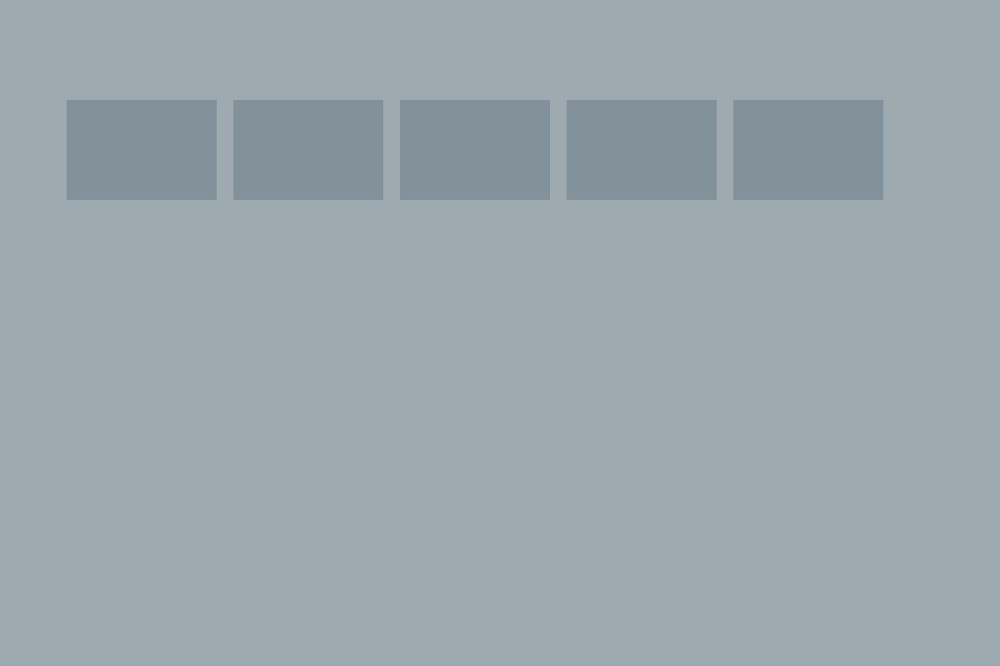
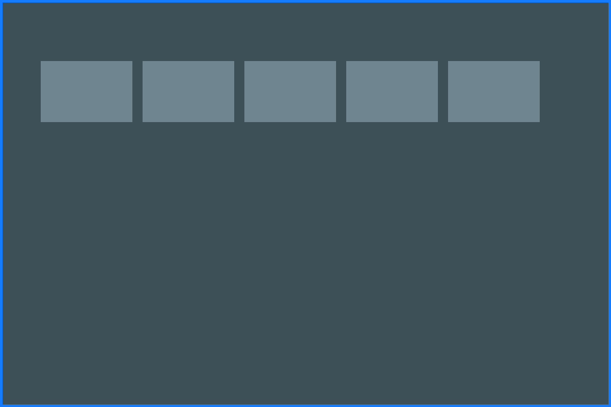

Mycie kostki brukowej
Usuwamy brud, mech, porosty i plamy.
→Usuwamy brud, mech, porosty i plamy.
Legnica i okolice
Przywracamy estetykę Twojej kostki, usuwamy brud, mech, osady i plamy. Szybkie terminy i widoczny efekt już po pierwszym czyszczeniu.
Efekty, które widać
Mycie ciśnieniowe to skuteczny sposób na przywrócenie świeżego wyglądu kostki brukowej, tarasów i podjazdów.
Zobacz więcej realizacji

Budujemy lokalne portfolio w Legnicy.
Dokładne mycie i estetyczny efekt.
Nawet w tym samym tygodniu.
Działamy lokalnie, bez korporacyjnego podejścia.
Wyślij zdjęcie kostki albo zadzwoń — przygotujemy szybką wycenę.